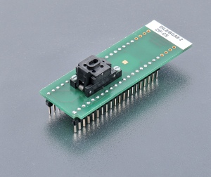

DIL8/BGA8-2 ZIF-CS
(Ord. no. 70-2862)
Preis: Preis auf Anfrage
- Universaladapter, für 8-polige Geräte Geräte im 8BALL WLCSP-Gehäuse
- Betriebsgarantie (mechanisch) des ZIF-Sockels – 500.000 Betätigungen
- HINWEIS: Bei der Identifizierung von Fehlern im Programmieradapter verwenden Sie bitte die PG4UW-Softwareversion 3.76 und neuer (siehe Anwendungshinweis AN-IDX)
- hergestellt in der Slowakei
| Ord. no. | 70-2862 |
| Socket | ZIF BGA8, Clamshell type |
| Bottom | 2x20 pins, square, 0.6x0.6mm, rows spacing 600mil |
| Class | Universal |
| Subclass | DIL/BGA |


Adapter-Handbuch
- Setzen Sie den Adapter in den ZIF-Sockel des Programmiergeräts ein, wie in der Abbildung daneben dargestellt. Wenn Sie sich nicht sicher sind, wie der Adapter im ZIF-Sockel des Programmiergeräts ausgerichtet werden muss, gilt die allgemeine Regel, dass die Ausrichtung des Textes auf dem Titel mit dem Text oben auf dem Programmiergerät übereinstimmt.
- Öffnen Sie den ClamShell-ZIF-Sockel des Adapters. Setzen Sie das Gerät ein (legen Sie das Gerät auf die Kontakte). Die richtige Position des programmierten Geräts im BGA-ZIF-Sockel des Adapters wird auf dem Gehäuse des geöffneten BGA-ZIF-Sockels angezeigt. Die Referenzecke (Position von Pin A1) des Geräts wird durch einen Punkt angezeigt.
- Führen Sie eine Sichtprüfung der Verbindung zwischen Gerät und ClamShell-ZIF-Sockel des Adapters durch. Wenn alles in Ordnung zu sein scheint, schließen Sie den Sockel und das Gerät ist nun bereit für die Programmierung.
- Seien Sie vorsichtig, denn das falsche Einsetzen des Adapters in den ZIF-Sockel des Geräteprogrammierers oder des Geräts in den ClamShell-ZIF-Sockel des Adapters kann das programmierte Gerät beschädigen.
- Um das Gerät herauszunehmen, öffnen Sie den ClamShell-ZIF-Sockel des Adapters und entfernen Sie das Gerät daraus.
- Wenn Sie die Arbeit mit dem Adapter abgeschlossen haben, entfernen Sie ihn aus dem ZIF-Sockel des Geräteprogrammierers.
- Berühren Sie die Stifte des Adapters und des ZIF-Sockels des Adapters nicht direkt, da Schmutz zu Fehlern bei der Programmierung des Geräts führen kann.
- Für die Handhabung des Geräts empfehlen wir die Verwendung eines Vakuum-Aufnahmewerkzeugs.
- Betriebsbedingungen: Betriebstemperatur 5 °C ÷ 40 °C (41 °F ÷ 104 °F), Betriebsfeuchtigkeit 20 %...80 %, nicht kondensierend.
Gehäuse
BGA package


| NAME | SYMBOL | MIN | NOM | MAX |
| Profile | A | 0.555 | 0.58 | 0.605 |
| Ball Height | A1 | - | 0.23 | - |
| Body Thickness | A2 | - | 0.35 | - |
| Ball Diameter | b | - | 0.322 | - |
| Body Size | D | - | 3.57 | 3.685 |
| Body Size | E | - | 2.05 | 2.165 |
| Ball Pitch | e | - | 0.6 | - |
| Ball Array D | GD | - | 5 | - |
| Ball Array E | GE | - | 3 | - |
Geeignet für Programmer
Hinweis: Dieser Programmieradapter / Modul unterstützt möglicherweise nicht alle Geräte in den oben genannten Paketen auf Ihrem Programmiergerät. Bitte überprüfen Sie die Situation für bestimmte Geräte, mit denen Sie arbeiten möchten, anhand der aktuellen Geräteliste Ihres Programmiergeräts.